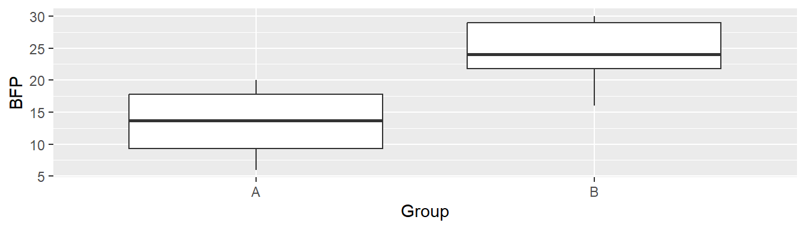

> 2 + 2[1] 4R im SchnelldurchgangBei der Programmiersprache R handelt es sich um eine interpretierte Programmiersprache. Inpretiert bedeutet, dass R Programmierbefehle direkt ausführt, intepretiert. Dies steht im Gegensatz zu kompilierten Programmiersprachen (z.B. C++) bei denen gesamte Programm zunächst von einem Compiler in Maschinenbefehle übersetzt wird. Wenn eine Programmiersprache interpretiert wird, hat dies den Vorteil, dass die Arbeit besser interaktiv durchgeführt werden kann. D.h. als Anwenderin können, je nach Bedarf, einzelne Befehle oder größere zusammenhängende Befehle, an R übergeben werden und sie werden direkt ausgeführt und R liefert das Ergebnis zurück. Insbesondere bei der Datenverarbeitung vereinfacht diese Vorgehensweise die Arbeit ungemein. So können Daten per trial-and-error schnell angepasst, transformiert oder graphisch bzw. deskriptiv dargestellt werden. Der Hauptnachteil von interpretierten Programmiersprachen ist, dass durch die Abarbeitung der einzelnen Befehle bestimmte Ausführungsoptimierungen durch R nicht angewendet werden können. Dies hat zur Folge, dass die Ausführungszeit, d.h. die Zeit die ein Programm benötigt um seine Aufgaben zu erledigen im Vergleich zu kompilierten Programmiersprachen zum Teil deutlich länger sein kann. In R kann dieser Nachteil jedoch durch die Einbindung von bestimmten Paketen (was ein Paket ist werden wir gleich sehen), die in anderen Programmiersprachen erstellt wurden und entsprechend optimiert wurden, in vielen Fällen umgegangen werden.
R findenWar es in den Anfangszeiten von R noch teilweise schwierig Hilfe bei auftretenden Problemen zu bekommen, hat sich dies in den letzten 10-15 Jahren glücklicherweise dramatisch geändert. Durch die etwas unglückliche Namensgebung R gab es beispielweise zunächst Probleme bei der Suche nach Problemlösungen, da die Suchmaschinen mit dem Buchstaben R wenig anfangen konnten. Im Internet finden sich jetzt allerdings zahllose überaus aktive Communities rund um R, mit ausführlichen Blogs, Podcasts, Youtube-Sammlungen und Programmierhilfen für alle möglichen Fragen und Probleme. Zwei sehr gute Quellen sind Stack Overflow bei denen oft schon mittels eines Google ein Treffer gefunden wird oder ChatGPT. Zudem ist die Menge an Büchern um und über R in den letzten Jahren geradezu explodiert. Mit eigenen Serien zur Datenanalyse mit R (Springer Use R!, CRC The R-Series) und zahllosen weiteren wissenschaftlichen Büchern mit mindestens Code-Beispielen in R bis hin zu frei verfügbaren Sammlungen hochqualitativer, wissenschaftlicher Bücher zu R (bookdown.org) lassen sich heutzutage relativ niedrigschwellig sehr gute R-skills aufbauen.
Eine treibende Kraft bei der Weiterentwicklung und Weiterverbreitung von R ist die riesige Gemeinschaft von Anwenderinnen und Programmiererinnen. Dadurch das R im Kern eine vollständige Programmiersprache ist, kann die Funktionalität von R ständig erweitert und individuellen Bedürfnissen angepasst werden. Neue Funktionalität wird in R im Rahmen von sogenannten Paketen (alternativ Bibliotheken) gebündelt. Durch diese Pakete können neue Befehle durch neudefinierte Funktionen in R zugänglich gemacht werden.
R Pakete werden über das Comprehensive R Archive Network (kurz CRAN) verteilt. CRAN ist ein internationales Netzwerk von Webservern auf denen R Pakete gespeichert werden und das das einfache Herunterladen aus R heraus ermöglicht. Die auf CRAN gespeicherte Pakete folgen alle einer streng definierten Struktur und durchlaufen eine Qualitätskontrolle. Die Weiterentwicklung bzw. weitere Anpassung wird durch sogenannte Maintainer (Entwickler) sichergestellt. Während die Anzahl an Zusatzpaketen am Anfang von R noch relativ übersichtlich war, liegt die derzeitige Anzahl an R Paketen auf CRAN bei 19900 (Stand 08.2023) mit Tendenz steigend. Da sich Datenanalysen über verschiedenen Disziplinen und Anwendungsfälle im Grund genommen immer wieder ähneln besteht daher eine hohe Wahrscheinlichkeit das auch für ungewöhnliche Anwendungsfälle bereits bestehende Pakete und Zusatzfunktionen in R zur Verfügung stehen. Daher besteht für den Großteil von Anwenderinnen oftmals gar nicht mehr die Notwendigkeit kompliziertere Programmieraufgaben selbst durchzuführen. Sondern, durch die Suche nach einem geeigneten Paket, können auftauchende Problem schnell gelöst werden. Dies führt ebenfalls dazu, dass die Einstiegshürde für den Umgang mit R sehr niedrig ist.
RDer Umgang mit R wird mittels spezifische Befehle durchgeführt. Die Befehler werden von R eingelesen und entsprechend ausgeführt. Im einfachsten Fall, kann R beispielsweise als ein überproportionierter Taschenrechner verwendet werden. Die Befehle weden auf der Kommandozeile eingegeben. Beispielsweise führt auf der R Kommandozeile der folgende Befehl 2 + 2 gefolgt von einem ENTER zu folgender Ausgabe:
> 2 + 2[1] 4Das > steht für die Kommandozeile und [1] kennzeichnet die erste Zeile, daher die 1 der Ausgabe von R.
Die Kommandozeile in R funktioniert nach dem Prinzip einer sogenannten REPL. REPL ist eine Abkürzung für die englischen Begriffe read-eval-print loop. Die Eingabe wird durch R eingelesen (R), im Rahmen der Programmiersprache evaluiert (E), das Ergebnis wird ausgegeben (P) und anschließend geht die Kommandozeile zurück zum Ausgangszustand (L). R liest die Eingabe 2 + 2, evaluiert diese Eingabe, dies führt zu dem Ergebnis 4, das Ergebnis wird auf der Kommandozeile ausgegeben, und R wartet nun wieder auf die nächste Eingabe >. Wenig überraschend, führt die Eingabe 3 * 3 zu folgenden Ablauf.
> 3 * 3[1] 9Die Anweisungen 2 + 2 oder 3 * 3 werden allgemein als Ausdrücke bezeichnet. Wir könnten die Beispiele jetzt mit den üblichen Grundrechenarten +-/* weiterführen, aber es würde nichts Neues dazukommen. Daher schauen wir uns jetzt an, wie wir komplexere, mehrstufige Berechnungen durchführen können. Dazu schauen wir uns ein zentrales Konzept von Programmiersprachen an: Variablen.
RNehmen wir, wir wollen das Ergebnis der letzten komplexen Berechnung, in irgendeiner Form weiter verwenden. Die im Beispiel berechnete 9 steht jetzt allerdings für die weitere Bearbeitung nicht mehr zur Verfügung. R hat die REPL ausgeführt, die Berechnung der 9, und da jetzt mit dieser Ausgabe nichts weiteres durchgeführt wurde, ist die Ausgabe auch nirgends gespeichert worden. Die Ausgabe bzw. das Ergebnis eines Befehlt wird als Rückgabewert bezeichnet. Um den Rückgabewert eines Ausdrucks weiter zu bearbeiten, muss dieser Wert in irgendeiner Form R zugänglich gemacht werden, d.h. der Rückgabewert muss irgendwie gespeichert werden. Um Werte weiter verwenden zu kommen, wird den Werten daher ein Bezeichner, ein Name, zugewiesen. Es wird eine Variable eingeführt. Erfahrungsgemäß stellt dieses Konzept eine erste Größe Hürde im Umgang mit Rda, das diese Konzept beispielweise in Tabellenkalkulationsprogrammen, bei denen die Berechnungen scheinbar direkt auf den zu sehenden Daten stattfindet, nicht vorhanden ist. Letztendlich ist eine Variable aber nichts als ein Wert in R dem ein Name zugewiesen wurde.
Um in R einem Ausdruck bzw. dessen Rückgabewert einen Namen zuzuweisen wird ein spezieller in R definierter Befehl verwendet, der Zuweisungsoperator <-. Möchte ich beispielsweise das Ergebnis der „komplexen“ Berechnung 3 * 3 später weiter verwenden, dann verwende ich den Zuweisungsoperator -> um dem Rückgabewert einen Namen zu geben.
> wert_1 <- 3 * 3R jetzte keinen Ausdruck mehr zurück, da das Ergebnis des Zuweisungsoperator die Zuweisung eines Namens ist, was keinen Wert zurückgibt mehr ergibt. Intern hat R die Berechnung durchgeführt und dem Rückgabewert den Namen wert_1 zugewiesen. Der Name ist dabei, im Rahmen bestimmter Konventionen vollkommen willkührlich und R hätte mich nicht daran gehindert wert_2, wert_123, thomas, steffie oder einen anderen Namen zu verwenden.
Dies Frage stellt sich jetzt natürlich, wie komme ich meinen berechneten Wert wieder heran. Einfach indem ich den Bezeichner, den Namen, wert_1 an R übergebe.
> wert_1[1] 9In R-Studio, gibt es oben-rechts einen Reiter mit der Aufschrift Environment, hier sollte jetzt auch ein Eintrag zu finden sein mit dem Bezeichner wert_1 und dem angehängten Wert \(9\).
Dieser Prozess funktionert genau gleich mit einem komplexeren Ausdruck wie 2 + 2 * 4.
> x <- 2 + 2 * 4Aufruf des Bezeichners x von auf der Kommandozeile führt dann entsprechend wieder zu der Ausgabe des Wertes.
> x[1] 10Konzeptionell stellt sich der Vorgang der Zuweisung in etwa so dar. Im internen Speicher von R wird der Wert \(10\) an einer passen Stelle abgespeichert und in einer Tabelle wird ein Eintrag mit dem Bezeichner x zusammen mit der Adresse des Wertes \(10\) abgelegt. Wenn R dann auf den Bezeichner x trifft, dann schaut es in der Tabelle nach, an welcher Stellt sich der Wert befindet und gibt diesen aus. Dies hat zur Folge, dass Bezeichner genauso wieder in Ausdrücken verwendet werden können wie Werte. R ersetzt den jeweiligen Bezeichner mit dem hinterlegten Wert und führt den Ausdruck aus.
> x + wert_1[1] 19R ersetzt den Bezeichner x mit dem Wert \(10\) und den Bezeichner wert_1 mit dem Wert \(9\) und addiert die beiden Werte zusammen.
In dieser Vorgehensweise besteht ein grundlegender Unterschied zur der Arbeitsweise mit Tabellenprogrammen bei denen immer direkt auf den jeweiligen Zellen gearbeitet wird. In R werden Berechnungen, die Rückgabewerte von Ausdrücken, Bezeichner zugewiesen und können dann in späteren Ausdrücken (Befehlen) wieder aufgerufen werden. Anders herum, wenn Zwischenergebnisse keinen Bezeichner haben, können sie auch nicht wiederverwendet werden.
Zwei weitere Erläuterungen zu den bisherigen Beispielen sind notwendig. In den bisherigen Ausdrücken sind Leerzeichen zwischen die einzelnen Teile der Ausdrücke gesetzt worden. Diese Leerzeichen dienen lediglich der Leserlichkeit und haben keinen Einfluss auf die Evaluierung des Ausdrucks durch R. Daher sind die Ausdrücke 2 + 2 * 4 und 2+2*4 äquivalent und führen zum gleichen Ergebnis. Bei der Ausgabe des Wertes ist wahrscheinlich auch aufgefallen, das R nicht den Wert \(16\) berechnet hat, der korrekt wäre, wenn die Evaluierung des Ausdrucks streng von links nach rechts durchgeführt wird 2 + 2 * 4 = 4 * 4 = 16. R hat jedoch die korrekte mathematischen Regel Punkt-vor-Strich angewendet und ist daher zum korrekten Ergebnis 10 gekommen.
In R wird bei Bezeichnern zwischen Groß- und Kleinschreibung unterscheidet. Daher führt der Aufruf des Bezeichners X zu einem Fehler.
> XError in eval(expr, envir, enclos): Objekt 'X' nicht gefundenDie Fehlermeldung von R gibt auch direkt an, was das Problem ist, das nämlich kein Objekt mit der Bezeichnung X gefunden werden kann.
Das Auftreten von Fehler führt bei R Neueinsteigerinnen oft zu großer Verwirrung ist aber im Programmieralltag ein vollkommen normales Ereignis und sollte daher niemanden aus der Ruhe bringen. Im vorliegenden Fall bemängelt R lediglich das es den Bezeichner X nicht finden kann und dementsprechend nicht weiß wie es weiter verfahren soll.
Damit haben wir jetzt das erste große Konzept in R, bzw. in allen Programmiersprachen, das der Variable kennengelernt. Als nächstes wenden wir uns dem Konzept der Funktionen in R zu.
REin gutes Template für Funktionen in Programmiersprachen sind Funktionen aus der Mathematik.
\[\begin{equation*} y = f(x) \end{equation*}\]
Wir haben eine Funktion \(f()\), dieser Funktion übergeben wir ein Argument (auch Parameter) \(x\). Die Funktion \(f()\) macht dann etwas mit diesem Parameter und gibt einen Rückgabewert \(y\) zurück. Sei zum Beispiel die folgenden Funktion definiert.
\[\begin{equation*} f(x) = x^2 \end{equation*}\]
D.h. der Funktion \(f()\) wird der Parameter \(x\) übergeben. Dieser Wert wird anschließend quadriert und das Ergebnis der Berechnung wird zurück gegeben.
In R werden Funktionen nach dem Muster R davon aus, dass die Anwenderin eine Funktion aufrufen möchte. Über
\[\begin{equation*} f(x,y) = x^2 + y^2 \end{equation*}\]
Ein einfaches Beispiel ist die Anwendung der Wurzelfunktion auf einen numerischen Wert. In R gibt es schon eine vordefinierte Funktion mit dem Bezeichner sqrt(), welche die Wurzel des übergebenen Parameters berechnet.
> y <- 9
> sqrt(y)[1] 3Im Beispiel wird zunächst dem Wert \(9\) der Bezeichner y zugewiesen. Dieser wird dann an die Wurzelfunktion sqrt() übergeben.
Ein etwas näher an der Anwendung liegendes Beispiel wäre beispielsweise die Berechnung des Mittelwerts oder die Summe der Datenreihe \((3, 5, 7)\) sein. In R wird eine solche geordnete Reihe von Zahlen als Vektor repräsentiert. Um einen solchen Vektor zu erstellen wird wiederum eine Funktion c() (für concatenation) verwendet.
> z <- c(3, 5, 7)Mit dieser Anweisung hat R einen Vektor mit den drei Einträgen erstellt. Wir können jetzt den Mittelwert \(\bar{z} = \frac{1}{3}\sum_{i=1}^3z_i\) mittels der Funktion mean() berechnen.
> mean(z)[1] 5Vielleicht interessiert uns jetzt nicht der Mittelwert sondern die Summe \(\bar{z} = \sum_{i=1}^3z_i\). Dafür können wir die sum() Funktion verwenden.
> sum(z)[1] 15Dies sind jetzt nur einige wenige Beispiele und einer der Skills im Umgang mit R besteht darin die Namen der Funktion sich zu merken. Dies kann am schnellesten durch den täglichen Umgang mit R erlernt werden. Am Besten ab heute.
R-PaketenSollte sich der Fall ergeben, dass keine geeignete Funktion mit R mitgeliefert wird, dann können Zusatzfunktionen mittels sogenannter Pakete installiert werden. Ein Paket kann dabei als eine Sammlung von Funktionen und Anweisungen angesehen werden mit deren Hilfe die Funktionalität von R erweitert werden kann. Daher wird zunächst Information darüber benötigt, in welchem Paket die gewünschte Funktionalität vorhanden ist. Hierfür reicht meistens eine kurze Suche mittels Google aus.
Ist das Paket nun bekannt, dann sind zwei Schritte zunächst durchzuführen. Wobei der 1. Schritt nur beim ersten Mal durchgeführt werden muss. Zunächst muss das benötigte Paket in der lokalen, d.h. derjenigen auf dem Rechner laufenden, R-Umgebung installiert werden, wenn es noch nicht bereits vorher installiert wurde (in R-Studio: Reiter unten-links Packages).
Ein Paket kann mittels des Befehlt install.packages() installiert werden. Der Name des Paket muss in Gänsefüßchen an die Funktion übergeben werden. Wollen wir beispielsweise das Paket performance installieren, führen wir den folgenden Befehl aus.
> install.packages("performance")R kontaktiert im Hintergrund den CRAN-Server und lädt das Paket sowie benötigte Abhängigkeiten automatisch herunter. Wenn alles gut läuft, dann ist das Paket nun in der lokalen Umgebung installiert. Die Funktionalität des Paket steht jedoch noch nicht direkt zur Verfügung! Sondern, das Paket muss mit einem weiteren Befehl in die derzeit aktive Arbeitsumgebung geladen werden.
Um das Paket in die aktive Arbeitsumgebung zu laden wird gibt es zwei Befehle in R, library() und require(). Bei require() überprüft R zunächst ob das Paket schon geladen wurde, während bei library() das Paket einfach geladen wird. Um die Funktionalität von performance jetzt in der aktiven Session zu nutzen, kann dementsprechend library() benutzt werden.
> library(performance)Dieser zweite Schritt des Paket laden, muss jedes mal nach einen Neustart von R wieder durchgeführt werden. Zusatzpakete werden durch R beim Start nicht automatisch geladen.
Neue Pakete müssen nur beim ersten Mal neu installiert werden. Danach immer nur noch entweder mit library() oder require() geladen werden.
Der große Vorteil von R, beziehungsweise von jeder vollwertigen Programmiersprache, besteht nun darin, dass problemlos eigene Funktion definiert werden können sollten sich keine bereits fertigen Funktionen finden lassen. Dies führt dazu, dass ständig neue Funktionalität zu R hinzugefügt werden kann und mittlerweile kaum eine Disziplin nicht mit eigenen, spezialisierten Paketen aufwarten kann.
Im folgenden wird nur kurz examplarisch das Schreiben eigener Funktionen gezeigt, da damit deutlich tiefer in die Programmierung mit R eingestiegen werden muss, als dass zum jetzigen Zeitpunkt notwendig ist.
Wollen wir zum Beispiel eine Funktion schreiben die den gewichteten Mittelwert aus zwei Werten berechnet mit den Gewichten \((\frac{1}{3},\frac{2}{3})\):
\[\begin{equation*} f(x,y) = \frac{1}{3}x + \frac{2}{3}y \end{equation*}\]
Dann könnten wir das in R wie folgt ausdrücken.
> mein_gewichteter_mittelwert <- function(x,y) {
+ x/3 + 2*y/3
+ }Um eine eigene Funktion zu defineren, muss das Schlüsselworts function() verwendet werden. Wenn R den Ausdruck function sieht, dann interpretiert es den Ausdruck als Definition einer neuen Funktion. Auf das Schlüsselwort folgen runde Klammern () die die benötigten Parameter der Funktion umschließen. Im Beispiel werden zwei Parameter definiert \(x\) und \(y\). Die Namen der Parameter sind dabei vollkommen willkürlich und müssen lediglich zu späteren Ausdruck in der Funktion passen. Es folgen dann zwei geschweifte Klammern {} die den sogenannten Funktionskörper definieren. Im Funktionskörper ist die Funktionalität der Funktion hinterlegt. Konkret stehen hier die Ausdrücke mit derer die Funktion ihren Ergebniswert berechnen kann. Um die Funktion aufrufbar zu machen, braucht sie wieder einen Bezeichner. Dieser wird mittels des Zuweisungsoperators <- definiert. In R-Studio sollte in der Environment nach dem Ausführen der Anweisung nun ein Eintrag mit dem Namen mein_gewichteter_mittelwert stehen. Der Name ist wiederum vollkommen willkürlich und es R kontrolliert nicht ob mein Bezeichner semantisch dem entspricht was die Funktion berechnet.
Nachdem ich die Funktion definiert habe, kann ich sie wie jeder andere Funktion aufrufen. Bei Aufrufen der Funktion werden die Parameter entsprechend der übergegebenen Werte in den Klammern im Funktionskörper ersetzt. Und R führt die Anweisungen im Funktionskörper aus. Der Rückgabewert der Funktion ist die letzte Anweisung des Funktionskörpers. Im vorliegenden Beispiel, da es nur eine Anweisung gibt, wird dieser Wert zurück gegeben.
> mein_gewichteter_mittelwert(3,6)[1] 5Was die letzte Anweisung für den Rückgabewert bedeutet ist etwas einfacher zu sehen, wenn wir die Funktion etwas kompliziert schreiben.
> mein_gewichteter_mittelwert_2 <- function(x,y) {
+ a <- x/3
+ b <- 2*y/3
+ a + b
+ }
> mein_gewichteter_mittelwert_2(3,6)[1] 5Hier haben wir mit a und b zunächst zwei Zwischenberechnung durchgeführt und dann in der letzten Anweisung das Ergebnis für den Rückgabewert berechnet.
Wer tiefer in die Programmierung von Funktion in R einsteigen möchte, sollte sich R4DS und Advanced R anschauen.
In der Programmiersprache R gibt es eine Vielzahl von Datentypen, die es Entwicklern ermöglichen, Daten auf effiziente und strukturierte Weise zu verarbeiten. Ein Verständnis dieser Datentypen ist von entscheidender Bedeutung, um effektiv mit R zu arbeiten. Einige der wichtigsten Datentypen in R sind:
Vektoren sind grundlegende Datentypen in R und können sowohl numerische als auch nicht-numerische Werte speichern. Sie können als eine geordnete Sammlung von Elementen betrachtet werden. Vektoren können mit der Funktion c() erstellt werden und unterstützen Element-zu-Element-Operationen.
Matrizen sind zweidimensionale Datenstrukturen, die aus Zeilen und Spalten bestehen. Sie werden häufig für numerische Berechnungen, wie lineare Algebra, verwendet. Matrizen können mit der Funktion matrix() erstellt werden.
Zeichenfolgen repräsentieren Textdaten und werden oft für die Manipulation von Texten und die Verarbeitung von Zeichenketten verwendet. Sie können mit einfachen Anführungszeichen (') oder doppelten Anführungszeichen (") erstellt werden.
Logische Werte (TRUE oder FALSE) werden verwendet, um Wahrheitswerte darzustellen. Sie sind entscheidend für Bedingungen und logische Ausdrücke in R.
data.frame() oder tibble()Dataframes sind ähnlich wie Matrizen, aber sie ermöglichen die Speicherung verschiedener Datentypen (z. B. numerisch, Zeichenfolgen, Faktoren) in den Spalten. Data Frames sind besonders nützlich für die Verarbeitung und Analyse von tabellarischen Daten und können mit der Funktion data.frame() erstellt werden.
Diese Datentypen bilden das Grundgerüst für die Datenverarbeitung und Analyse in R. Ihr Verständnis ist unerlässlich, um effektiv mit Daten zu arbeiten und komplexe Analysen durchzuführen. R bietet zudem zahlreiche Funktionen zur Manipulation und Umwandlung dieser Datentypen, was die Flexibilität und Leistungsfähigkeit der Sprache weiter erhöht.
Im Folgenden wird ein etwas umfangreicheres Beispiel mit nur kurzen Erklärungen exemplarisch vorgeführt. Eingehende Erläuterungen zu den verwendeten Befehlen kann in R mittels der Hilfedokumentation aufgerufen werden. Dazu wird lediglich ein ? vor den Funktionsnamen gestellt und R öffnet die dazu gehörende Hilfedatei.
> ?meanRSei der folgende Datensatz aus Tabelle XY gegeben. In zwei unabhängigen Gruppen A und B wurde der Körperfettgehalt bestimmt und nun soll untersucht werden, ob ein statistisch signifikanter Unterschied zwischen den beiden Gruppen besteht. Dies ist natürlich nur ein synthetisches Beispiel und sollte in dieser Form daher nicht im Rahmen einer tatsächlichen wissenschaftlichen Arbeit durchgeführt werden, sondern dient lediglich der Anschauung.
| Group | BFP |
|---|---|
| A | 13.3 |
| A | 6.0 |
| A | 20.0 |
| A | 8.0 |
| A | 14.0 |
| A | 19.0 |
| B | 22.0 |
| B | 16.0 |
| B | 21.7 |
| B | 210.0 |
| B | 30.0 |
| B | 26.0 |
| B | 30.0 |
Um eine Datenanalyse durchzuführen, müssen die Daten zunächst in R eingeladen werden. In der Rohform (Supplementary Material: XYZ) liegen die Daten in Form einer Textdatei vor. Die erste Spalte der Datei zeigt die Gruppenzugehörigkeit an, während die zweite Spalte den jeweiligen Fettgehalt beinhaltet. Die Spalten sind durch ein Komma voneinander getrennt und als Dezimaltrennzeichen, der internationalen Konvention folgend, wird ein Punkt verwendet. Um die Daten in R zu laden wird aus dem Paket readr die Funktion read_csv() verwendet. Zunächst muss jedoch das derzeitige Arbeitsverzeichnis von R auf den entsprechende Ordner unter dem die Datei abgelegt gesetzt werden. Dazu wird die Funktion setwd() (kurz für set working directory) verwendet. Da Pfadangeben in R immer relativ zu Arbeitsverzeichnis bestimmt werden, erleichtert dieser Schritt die weitere Arbeit da keine langen Dateipfade angegeben werden müssen und.
Nun wird das Paket readr geladen in dem zahlreiche Funktionen zum einlesen verschiedener Dateiarten hinterlegt sind. Wir laden die Datei mittels der Funktion read_csv() ein. read_csv() ist spezialisiert auf das einlesen von Komma-separierten Textfiles (comma-separated-v**alues).
> library(readr)
> bfp <- read_csv(file = 'bfp_data.txt')
> bfpDie Daten stehen nun unter dem Bezeichner bfp in R zur Verfügung. Der Name ist dabei wieder willkürlich gewählt und der Einfachheit halber kurz gehalten.
Die Daten sind in einem sogenannten data.frame-Objekt (bzw. der neueren Version tibble) abgelegt und können nun weiter verarbeitet werden. Beispielsweise kann mittels der Funktion summary() ein Überblick über deskriptiven Statistiken der Daten erzeugt werden.
> summary(bfp) Group BFP
Length:13 Min. : 6.00
Class :character 1st Qu.: 14.00
Mode :character Median : 20.00
Mean : 33.54
3rd Qu.: 26.00
Max. :210.00 Hier ist bereits zu sehen, dass einer der Datenpunkt wahrscheinlich fehlerhaft ist, da der Wert > 100 ist, was bei für einen prozentualen Körperfettanteil nicht möglich ist. Im nächsten Schritt sollen die Daten dann graphisch mittels eines Boxplots dargestellt werden. R stellt von Haus aus zahlreiche Funktion zur einfachen graphischen Darstellung bereit. Wir wollen hier aber auf das Paket ggplot2 zurückgreifen, welches die Erstellung moderner Graphiken in Publikationsqualität ermöglicht (Healy, 2018; Wickham, 2016). Vor der Verwendung muss das Paket wiederum zunächst geladen werden.
> library(ggplot2)
> ggplot(bfp, aes(Group, BFP)) + geom_boxplot()
Abbildung 2: Darstellung der Beispieldaten mittels eines Boxplots nach Ausschluss des Ausreißers.
Im Boxplot in Abbildung XY ist der problematische Datenpunkt noch klarer ersichtlich und er verhindert auch gleichzeitig eine Analyse der Daten. Da wir keine weitere Information haben, schließen wir den Datenpunkt aus. Dazu benutzen wir aus dem Paket dplyr die Funktion filter.
> library(dplyr)
> bfp_clean <- filter(bfp, BFP <= 100)
> bfp_clean# A tibble: 12 × 2
Group BFP
<chr> <dbl>
1 A 13.3
2 A 6
3 A 20
4 A 8
5 A 14
6 A 19
7 B 22
8 B 16
9 B 21.7
10 B 30
11 B 26
12 B 30 > ggplot(bfp_clean, aes(Group, BFP)) + geom_boxplot()
Die graphische Darstellung mittels eine Boxplots ist jetzt schon deutlich nachvollziehbarer (siehe Abbildung XY). Ohne jetzt weiter auf statistische Voraussetzungen einzugehen führen wir jetzt einen unabhängigen t-Test für Gruppen mit unterschiedlichen Varianzen. Dazu benutzen wir wieder eine Funktion aus R.
> t.test(BFP ~ Group, data = bfp_clean)
Welch Two Sample t-test
data: BFP by Group
t = -3.4017, df = 9.9886, p-value = 0.006762
alternative hypothesis: true difference in means between group A and group B is not equal to 0
95 percent confidence interval:
-18.040619 -3.759381
sample estimates:
mean in group A mean in group B
13.38333 24.28333 Wir dieses Beispiel zeigt, lässt sich in R mittels weniger Befehle eine Datenanalyse realisieren. Die Entwickler von R haben dabei darauf geachtet, dass die Namensgebung von Funktionen möglichst nahe an der gewünschten Tätigkeit liegt, so dass einen der englische Begriff meist schnell die Funktion herleiten lässt. Im Beispiel haben wir alle Befehlt direkt auf der Kommandozeile eingegeben und die Daten interaktiv analysiert. Bei einer tatsächlichen Analyse wird die Datenanalyse aus einer Kombination von interaktiven Arbeiten und permanenten Skripten bestehen. Beispielsweise würde diejenigen finalen Befehl die auf die Daten angewendet werden sollen in eine Skriptdatei geschrieben werden, so dass die Analyse zu einem späteren Zeitpunkt wieder aufgegriffen bzw. nachvollziehbar ist. So könnte der gezeigte Workflow in das folgende Skript münden:
> setwd(PFAD)
>
> # Notwendige Bibliotheken
> library(readr)
> library(ggplot2)
> library(dplyr)
>
> # Daten einlesen
> bfp <- read_csv(file = 'bfp_data.txt')
>
> # Daten bearbeiten
> bfp_clean <- filter(bfp, BFP <= 100)
>
> # Deskriptiv
> summary(bfp_clean)
>
> # Graphiken
> ggplot(bfp_clean, aes(Group, BFP)) + geom_boxplot()
>
> # Analyse
> t.test(BFP~Group, data = bfp_clean)Die verwendeten Befehle sind durch die Verwendung von Kommentaren, die in R mit einem # signalisiert werden, noch besser nachvollziehbar.
R einlesenR prozessieren mit tidyverse()R visualisieren mit GGplot()RDiese Beispiele dienen nur um einen allerersten Überblick über die Arbeit mit R zu gewinnen und die ersten Konzepte im Umgang mit R kennenzulernen. Wie bereits an diesem einfachen Beispiel ersichtlich besteht eine der Herausforderungen darin die notwendigen Befehle und Funktionen zu erlernen. Der Einstieg in R ähnelt daher dem Erlernen einer neuen Sprache. Diese Anfangshürde wird heutzutage durch die deutlich verbesserten Suchfunktionen der Internetsuchmaschinen sehr erleichtert. So reicht meistens eine Suche die mit einem R startet und dem Problem um Lösungsvorschläge zu finden. Auf diese Weise kann eine schnelle Produktivität in R erreicht werden, ohne das tiefergehende Programmierkenntnisse benötigt werden. Daher eignet sich R sehr gut als eine erste Programmiersprache bei der nach und nach weiterführende Programmierkonzepte nach Bedarf erarbeitet werden können. Gute Anfangsquellen für den Einstieg sind (Chambers, 2008; Dalgaard, 2020; Peng, 2016; Wickham & Grolemund, 2016).